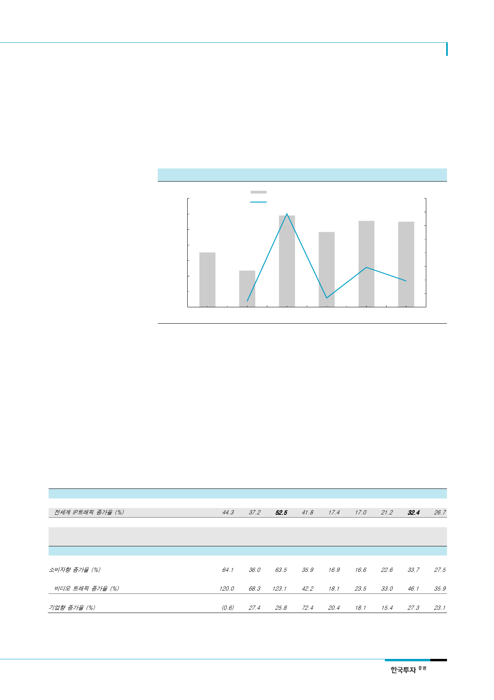

SK하이닉스(000660)
서버수요 약세의 원인은
일반 기업의 수요 감소
xSP업체들의 대규모 데이터센터 건설에도 전체 서버수요가 약세를 보이는 것은 일반 기업들
의 수요가 감소하고 있기 때문이다. xSP업체들의 클라우드컴퓨팅 산업이 성장한다는 것은
많은 기업들이 자체 서버를 운용하기보다는 xSP업체들의 데이터센터를 이용한다는 의미이다.
일반 기업들의 서버수요는 2015년을 제외하고는 거의 성장하지 못하고 있다. 데이터센터가
증가해 서버수요가 증가할 것이라고 예상하는 것은 서버수요의 구조적 변화를 절반만 보고
판단하는 것이다.
[그림 9] 일반기업의 서버 구매량 및 증가율 추이
(천대)
8,200
8,000
7,800
7,600
7,400
7,200
7,000
6,800
2013
일반기업 (Enterprise) 서버 구매량 (좌)
일반기업 서버 구매량 증가율 (우)
2014
2015
2016
2017F
자료: Gartner, 한국투자증권
(%)
12
10
8
6
4
2
0
(2)
(4)
2018F
서버디램 채용량 증가를
이끄는 또 다른 요인은
데이터 트래픽
우리는 서버디램 채용량 증가를 견인하는 요인을 데이터 트래픽 증가라고 생각한다. 2012년
이후 데이터 트래픽 증가율은 예상을 하회했다. 동영상 콘텐츠 증가, 빅데이터 기반의 서비
스산업 성장 등으로 데이터 트래픽이 고성장할 것으로 예상했지만 2013~2015년 데이터 트
래픽 증가율은 연평균 19%로 이전 3년 평균 44%에 비해 크게 낮아졌다. 하지만 2016년에
는 데이터 트래픽이 32% 증가해 2011년 이후 처음으로 예상을 상회했다. 우리는 이 같이
데이터 트래픽이 예상보다 큰 폭으로 증가하면서 서버디램 수요가 강세를 보이고 있다고 판
단한다. 2016년과 같이 데이터 트래픽이 예상보다 크게 증가했던 2011년의 경우 서버수요
증가율은 전년 대비 낮아졌지만 서버디램 채용량은 102% 증가해 2010년의 60%에 비해 크
게 높아졌다. 샘플 수가 많지는 않지만 데이터 트래픽이 예상 외로 증가하면서 xSP업체들
혹은 서버업체들의 디램 채용량이 급증한 것으로 추정할 수 있다.
<표 1> 전 세계 데이터 트래픽 (IP 트래픽)
추정시기
전세계 IP 트래픽
전세계 IP트래픽 증가율 (%)
전년도 예상치
전년도 예상치 대비
실제치 괴리율 (%)
부문별 IP 트래픽
소비자향
소비자향 증가율 (%)
비디오 (스트리밍/TV 등)
비디오 트래픽 증가율 (%)
기업향
기업향 증가율 (%)
2006
4,234
2007
6,577
2006
2,641
2007
4,359
1,586 2,192
자료: CISCO, 한국투자증권
2008
10,174
10,747
(5.3)
2008
7,071
1,262
3,103
2009
14,686
44.3
14,832
(1.0)
2009
11,602
64.1
2,776
120.0
3,084
(0.6)
2010
20,181
37.2
20,396
(1.2)
2010
15,774
36.0
4,672
68.3
3,930
27.4
2011
30,734
52.5
28,023
9.7
2011
25,792
63.5
10,423
123.1
4,942
25.8
2012
43,570
41.8
43,441
0.3
2012
35,049
35.9
14,818
42.2
8,522
72.4
2013
51,168
17.4
55,553
(7.9)
2013
40,956
16.9
17,506
18.1
10,263
20.4
(단위: 1개월 당 페타바이트(Petabyte)
2014
59,850
17.0
62,476
2015
72,521
21.2
72,434
2016 2017F
96,054
32.4 26.7
88,443 121,694
(4.2)
0.1
8.3
2014
47,743
16.6
21,625
23.5
12,120
18.1
2015
58,539
22.6
28,768
33.0
13,983
15.4
2016
78,250
33.7
42,029
46.1
17,804
27.3
2017F
99,776
27.5
57,116
35.9
21,918
23.1
5